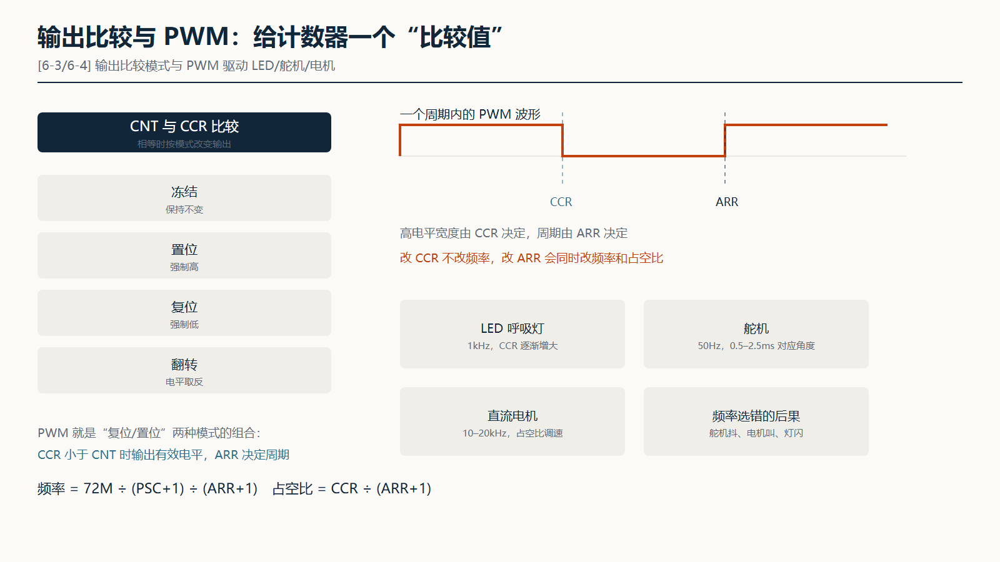

课程时长：约 75 分钟（两节） | 深度版 | 配套结构图与看图理解
6-3 讲原理：CNT 与 CCR 相等时，硬件按设定模式改变引脚电平；6-4 是它的实战：用 PWM 驱动 LED 呼吸灯、舵机、直流电机。
这一节把“定时器只会定时”的印象彻底改掉——它还能输出精确的方波，而方波是所有“模拟量控制”的基础。
说出输出比较四种模式的区别
推导 PWM 频率与占空比公式
配置一路 PWM 并驱动 LED/舵机
解释为什么改 ARR 会同时影响频率与占空比

图 12 输出比较的四种模式与 PWM 波形：CCR 决定高电平宽度，ARR 决定周期
左边四个方块是输出比较的四种动作：冻结（不变）、置位（强制高）、复位（强制低）、翻转（取反）。它们都在“CNT 等于 CCR”的那一刻生效。
右边是 PWM 波形：一个 ARR 周期内，CNT 从 0 数到 ARR；CCR 之前输出一种电平、之后输出另一种，于是形成占空比。频率由 ARR 决定，占空比由 CCR/ARR 决定。
定时器一直在数 CNT，从 0 到 ARR 循环。输出比较就是给 CNT 设一个“检查点”CCR：CNT 等于 CCR 时，按配置改变输出引脚。
四种模式决定“怎么变”：冻结保持不变、置位变高、复位变低、翻转取反。PWM 模式本质是“复位 + 置位”的组合。
| 模式 | CNT=CCR 时的动作 | 典型用途 |
|---|---|---|
| 冻结 | 输出不变 | 临时停用 |
| 置位 | 强制高电平 | 单脉冲 |
| 复位 | 强制低电平 | 单脉冲 |
| 翻转 | 电平取反 | 输出方波、测频率 |
PWM1：CNT < CCR 时输出有效电平；PWM2 相反。所谓“有效电平”由 CCER 里的极性位决定，高有效还是低有效可配。
驱动 LED 时要注意极性：低电平点亮，就要让“有效电平”对应低，否则占空比越大反而越暗。
TIM_OCInitTypeDef oc; oc.TIM_OCMode = TIM_OCMode_PWM1; oc.TIM_OutputState = TIM_OutputState_Enable; oc.TIM_Pulse = 300; /* CCR */ oc.TIM_OCPolarity = TIM_OCPolarity_High; TIM_OC1Init(TIM3, &oc); TIM_OC1PreloadConfig(TIM3, TIM_OCPreload_Enable); /* CCR 缓冲 */ TIM_Cmd(TIM3, ENABLE);
频率 = 72MHz ÷ (PSC+1) ÷ (ARR+1)；占空比 = CCR ÷ (ARR+1)。两个公式必须一起记，因为改 ARR 会同时改两个量。
| 负载 | 频率 | PSC/ARR | CCR 范围 |
|---|---|---|---|
| LED 呼吸灯 | 1kHz | 71 / 999 | 0–999 渐变 |
| 舵机 | 50Hz | 71 / 19999 | 500–2500（0.5–2.5ms） |
| 直流电机 | 10–20kHz | 71 / 3599 | 0–3599 |
PWM 由定时器外设驱动引脚，不是 GPIO 的 ODR。所以引脚必须配成“复用推挽”，并打开定时器与 GPIO 时钟；部分通道还要 AFIO 重映射。
GPIO_InitTypeDef g; g.GPIO_Pin = GPIO_Pin_0; g.GPIO_Mode = GPIO_Mode_AF_PP; /* 复用推挽 */ g.GPIO_Speed = GPIO_Speed_50MHz; GPIO_Init(GPIOA, &g); /* 通道 1 对应 TIM2_CH1 = PA0 */
LED：串限流电阻，1kHz 以上人眼看不到闪烁，只看到亮度
舵机：50Hz，脉宽 0.5–2.5ms 对应 0–180°，电源要独立、共地
直流电机：10–20kHz 避开听觉，必须用驱动芯片，不能直连 GPIO
共同点：占空比控制“大小”，频率决定“平不平滑”
为什么 PWM 能“模拟”模拟量：LED 以 1kHz 通断，人眼积分成平均亮度；电机以 20kHz 通断，绕组电感积分成平均电压。频率越高，积分越平滑，所以负载特性决定频率下限。
为什么改 ARR 会同时改频率和占空比：占空比的分母就是 ARR+1。固定 CCR 把 ARR 调大，频率下降、占空比也下降——想要“只改频率”，必须同时按比例改 CCR。
例 1：72MHz、PSC=71 → 1MHz；ARR=999 → 1kHz；CCR=300 → 占空比 30%。
例 2：舵机 50Hz → 周期 20ms。ARR=19999 时 1 个数 1µs，CCR=500 → 0.5ms，CCR=2500 → 2.5ms。
例 3：想把频率从 1kHz 改到 2kHz，ARR 改 499，若保持 30% 占空比，CCR 要同步改成 150。
| 错误写法 | 后果 | 正确做法 |
|---|---|---|
| 引脚配成普通推挽 | PWM 不出波形，只有固定电平 | 改 GPIO_Mode_AF_PP |
| CCR 大于 ARR | 占空比恒为 100%，看起来“一直亮” | CCR 不超过 ARR |
| 只改 ARR 想调频率 | 占空比跟着变，亮度/转速漂移 | 同步按比例改 CCR |
| 舵机与主板共用电源 | 一转就复位、抖动 | 舵机独立供电，共地 |
输出比较与 PWM 的关系：PWM 不是独立外设，它就是“输出比较 + 自动重装”的组合。理解这一点，就能用同一个定时器同时输出多路不同占空比的 PWM（每个通道一个 CCR）。
预装载（OCxPE）的意义：CCR 有影子寄存器，开了预装载后新值在周期边界生效，避免改占空比时出现“半个周期”的毛刺。
示波器测频率与占空比，和公式对照
改 CCR 观察亮度/舵机角度连续变化
把频率从 1kHz 降到 50Hz，看 LED 是否开始闪
| 现象 | 原因 | 解决 |
|---|---|---|
| 没有波形 | 引脚没配复用或定时器没使能 | 查 AF_PP 与 TIM_Cmd |
| 占空比不线性 | CCR 超过 ARR 或极性反了 | 检查 CCR 与 OCPolarity |
| 舵机抖动 | 频率不是 50Hz 或电源不稳 | 核对 ARR，独立供电 |
| 电机啸叫 | 频率落在听觉范围 | 提到 16kHz 以上 |
Q1. 输出比较四种模式？
A：冻结、置位、复位、翻转。
Q2. PWM 频率公式？
A：72M ÷ (PSC+1) ÷ (ARR+1)。
Q3. 占空比公式？
A：CCR ÷ (ARR+1)。
Q4. 为什么用复用推挽？
A：引脚由定时器外设驱动，不是 ODR。
Q5. PWM1 与 PWM2 的区别？
A：有效电平与 CNT<CCR 的对应关系相反。
Q6. OCxPE 是什么？
A：CCR 预装载使能，周期边界生效。
Q7. 舵机为什么 50Hz？
A：标准舵机协议要求 20ms 周期。
Q8. 一路定时器能出几路 PWM？
A：每个通道一路，通用定时器通常 4 路。
1. ARR=999、PSC=71，频率多少？
答：1kHz。
2. CCR=250、ARR=999，占空比？
答：25%。
3. 舵机 1.5ms 对应多少度？
答：约 90°（中位）。
4. 改频率要同时改什么？
答：CCR，保持占空比不变。
☐ 能画 PWM 波形
☐ 会推两个公式
☐ 能配一路 PWM
☐ 知道三种负载的频率